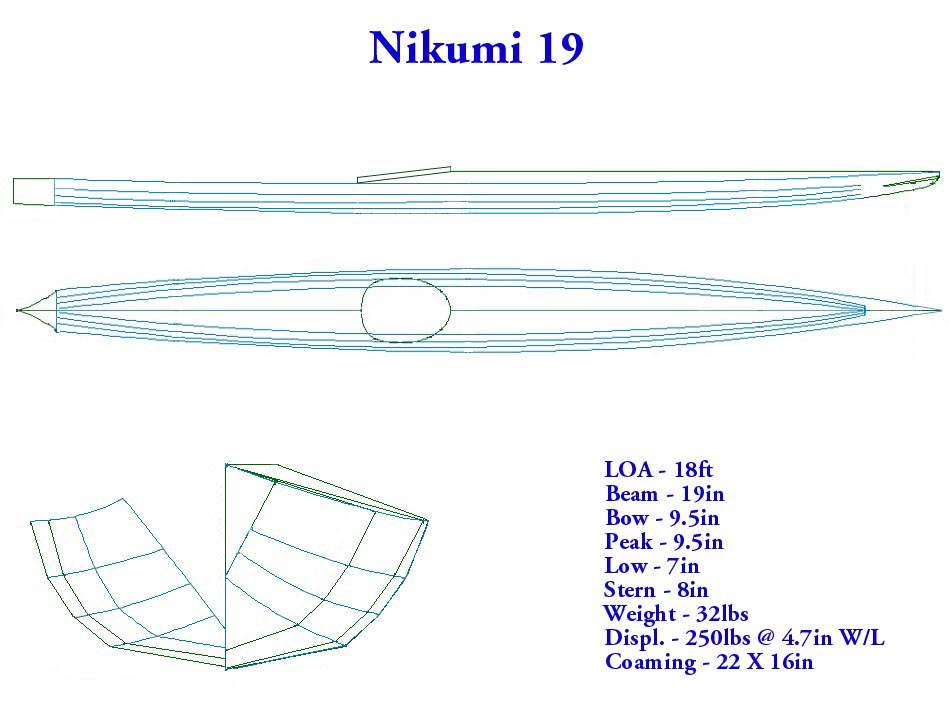

| Nikumi 19 Offsets / Drawings ( 1 of 2) | Menu Previous Page Next Page |
|
 The Nikumi 19 is based on the standard Nikumi. With it's greater length, narrower beam, and lower profile, it's designed for greater performance but less utility. The shallow and flat aft deck is designed for rolling. The length can easily be stretched to 18.5ft if desired. |
|